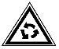
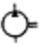
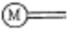

지게차운전기능사 (2008-03-30 기출문제)
1. 디젤기관에서 인젝터 간 연료 분사량이 일정하지 않을 때 나타나는 현상은?
- 연료 분사량에 관계없이 기관은 순조로운 회전을 한다.
- 연료소비에는 관계가 있으나 기관 회전에 영향은 미치지 않는다.
- 연소 폭발음의 차이가 있으며 기관은 부조를 하게 된다.
- 출력은 일정하나 기관은 부조를 하게 된다.
(정답률: 78%)

2. 터보차저에 대한 설명 중 틀린 것은?
- 흡기관과 배기관 사이에 설치된다.
- 과급기라고도 한다.
- 배기가스 배출을 위한 일종의 블로워(blower)이다.
- 기관 출력을 증가시킨다.
(정답률: 71%)
3. 기관 각 실린더에 공급되는 연료 분사량의 차이가 있을 때 발생하는 현상으로 가장 적합한 것은?
- 진동이 발생한다.
- 기관이 정지한다.
- 회전속도가 급증한다.
- 회전속도가 급감한다.
(정답률: 64%)
4. 디젤기관에서 노크 방지방법으로 틀린 것은?
- 착화성이 좋은 연료를 사용한다.
- 연소실벽 온도를 높게 유지한다.
- 압축비를 낮춘다.
- 착화기간 중의 분사량을 적게 한다.
(정답률: 47%)
5. 기관의 윤활유 압력이 규정보다 높게 표시될 수 있는 원인으로 옳은 것은?
- 엔진오일 실(seal) 파손
- 오일 게이지 휨
- 압력조절 밸브 불량
- 윤활유 부족
(정답률: 57%)
6. 기관의 배기가스 색이 회백색이라면 고장 예측으로 가장 적절한 것은?
- 소음기의 막힘
- 노즐의 막힘
- 흡기 필터의 막힘
- 피스톤 링의 마모
(정답률: 52%)
7. 피스톤과 실린더 사이의 간극이 너무 클 때 일어나는 현상은?
- 엔진오일의 소비증가
- 압축압력 증가
- 실린더 소결
- 출력증가
(정답률: 68%)
8. 기관에서 엔진오일이 연소실로 올라오는 이유는?
- 피스톤 링 마모
- 피스톤 핀 마모
- 커넥팅로드 마모
- 크랭크축 마모
(정답률: 75%)
9. 기관과열의 직접적인 원인이 아닌 것은?
- 팬벨트의 느슨함
- 라디에이터의 코어 막힘
- 냉각수의 부족
- 타이밍 체인(timing chain)의 헐거움
(정답률: 71%)
10. 기관이 작동되는 상태에서 점검 가능한 사항이 아닌 것은?
- 냉각수의 온도
- 충전상태
- 기관오일의 압력
- 엔진 오일량
(정답률: 47%)
11. 압력식 라디에이터 캡에 대한 설명으로 옳은 것은?
- 냉각장치 내부압력이 규정보다 낮을 때 공기밸브는 열린다.
- 냉각장치 내부압력이 규정보다 높을 때 진공밸브는 열린다.
- 냉각장치 내부압력이 부압이 되면 진공밸브는 열린다.
- 냉각장치 내부압력이 부압이 되면 공기밸브는 열린다.
(정답률: 56%)
12. 기관의 부하에 따라 자동적으로 분사량을 가감하여 최고 회전속도를 제어하는 것은?
- 플런저 펌프
- 캠축
- 거버너
- 타이머
(정답률: 49%)
13. 건설기계 엔진에 사용되는 시동모터가 회전이 안 되거나 회전력이 약한 원인이 아닌 것은?
- 시동스위치 접촉 불량이다.
- 배터리 단자와 터미널의 접촉이 나쁘다.
- 브러시가 정류자에 잘 밀착되어 있다.
- 배터리 전압이 낮다.
(정답률: 78%)
14. 엔진을 정지하고 계기판 전류계의 지시침을 살펴보니 정상에서 (-)방향을 지시하고 있다. 그 원인이 아닌 것은?
- 전조등 스위치가 점등위치에서 방전하고 있다.
- 배선에서 누전 되고 있다.
- 시동시 엔진 예열 장치를 동작시키고 있다.
- 발전기에서 축전지로 충전되고 있다.
(정답률: 58%)
15. 황산과 증류수를 이용하여 전해액을 만들 때의 설명으로 옳은 것은?
- 황산을 증류수에 부어야 한다.
- 증류수를 황산에 부어야 한다.
- 황산과 증류수를 동시에 부어야 한다.
- 철제용기를 사용한다.
(정답률: 62%)
16. AC발전기에서 전류가 흐를 때 전자석이 되는 것은?
- 계자 철심
- 로터
- 스테이터 철심
- 아마추어
(정답률: 56%)
17. 납산축전지를 오랫동안 방전상태로 두면 사용하지 못하게 되는 원인은?
- 극판이 영구 황산납이 되기 때문이다.
- 극판에 산화납이 형성되기 때문이다.
- 극판에 수소가 형성되기 때문이다.
- 극판에 녹이 슬기 때문이다.
(정답률: 68%)
18. 기관에서 예열 플러그의 사용시기는?
- 축전지가 방전되었을 때
- 축전지가 과다 충전되었을 때
- 기온이 낮을 때
- 각수의 양이 많을 때
(정답률: 72%)
19. 모터그레이더 앞바퀴 경사장치(리닝장치)의 설치 목적으로 맞는 것은?
- 조향력을 증가시킨다.
- 회전반경을 작게 한다.
- 견인력을 증가시킨다.
- 완충작용을 한다.
(정답률: 40%)
20. 무한궤도식 장비에서 트랙장력이 느슨해졌을 때 팽팽하게 조정하는 것으로 맞는 것은?
- 기어오일을 주입하여 조정한다.
- 그리스를 주입하여 조정한다.
- 엔진오일을 주입하여 조정한다.
- 브레이크 오일을 주입하여 조정한다.
(정답률: 52%)
21. 기중기 붐의 길어지면 작업반경은?
- 작업반경이 변함없다.
- 작업반경이 낮아진다.
- 작업반경이 짧아진다.
- 작업반경이 길어진다.
(정답률: 70%)
22. 굴삭기의 3대 주요부 구분으로 옳은 것은?
- 트랙 주행체, 하부 추진체, 중간 선회체
- 동력주행체, 하부 추진체, 중간 선회체
- 작업(전부)장치, 상부 선회체, 하부 추진체
- 상부 조정장치, 하부 추진체, 중간 동력장치
(정답률: 46%)
23. 수동변속기 클러치 페달의 자유간극 조정방법은?
- 클러치 링키지 로드를 조정하여서
- 클러치 페달 리턴스프링 장력을 조정하여서
- 클러치 베어링을 움직여서
- 클러치 스프링 장력을 조정하여서
(정답률: 30%)
24. 브레이크 장치의 베이퍼록 발생 원인이 아닌 것은?
- 긴 내리막길에서 과도한 브레이크 사용
- 엔진브레이크를 장시간 사용할 때
- 드럼과 라이닝의 끌림에 의한 가열
- 오일의 변질에 의한 비등점 저하
(정답률: 42%)
25. 지게차의 일반적인 조향방식은?
- 앞바퀴 조향방식이다.
- 뒷바퀴 조향방식이다.
- 허리꺾기 조향방식이다.
- 작업조건에 따라 바꿀 수 있다.
(정답률: 82%)
26. 수동변속기가 장착된 건설기계장비에서 주행 중 기어가 빠지는 원인이 아닌 것은?
- 기어의 물림이 덜 물렸을 때
- 기어의 마모가 심할 때
- 클러치의 마모가 심할 때
- 변속기 록 장치가 불량할 때
(정답률: 46%)
27. 도로상의 안전지대를 옳게 설명한 것은?
- 버스정류장 표지가 있는 장소
- 자동차가 주차할 수 있도록 설치된 장소
- 도로를 횡단하는 보행자나 통행하는 차마의 안전을 위하여 안전표지 등으로 표시된 도로의 부분
- 사고가 잦은 장소에 보행자의 안전을 위하여 설치한 장소
(정답률: 73%)
28. 앞지르기 금지장소가 아닌 것은?
- 터널 안, 앞지르기 금지표지 설치장소
- 버스 정류장부근, 주차금지 구역
- 경사로의 정상부근, 급경사로의 내리막
- 교차로, 도로의 구부러진 곳
(정답률: 72%)
29. 현장에 경찰공무원이 없는 장소에서 인명피해와 물건의 손괴를 입힌 교통사고가 발생하였을 때 가장 먼저 취할 조치는?
- 손괴한 물건 및 손괴 정도를 파악한다.
- 즉시 피해자 가족에게 알리고 합의한다.
- 즉시 사상자를 구호하고 경찰공무원에게 신고한다.
- 승무원에게 사상자를 알리게 하고 회사에 알린다.
(정답률: 88%)
30. 그림과 같은 교통안전표지의 설명으로 맞는 것은?

- 삼거리 표지
- 우회로 표지
- 회전형 교차로 표지]
- 좌로 계속 굽은 도로표지
(정답률: 89%)
31. 건설기계의 검사를 연장 받을 수 있는 기간을 잘못 설명한 것은?
- 해외임대를 위하여 일시 반출된 경우：반출기간 이내
- 압류된 건설기계의 경우 : 압류기간 이내
- 건설기계 대여업을 휴지 하는 경우 : 휴지기간 이내
- 사고발생으로 장기간 수리가 필요한 경우 : 소유자가 원하는 기간
(정답률: 71%)
32. 건설기계 정비시설을 갖춘 정비사업자만이 정비할 수 있는 사항은?
- 오일의 보충
- 배터리 교환
- 유압장치 호스 교환
- 제동등 전구의 교환
(정답률: 82%)
33. 임시운행 사유가 아닌 것은?
- 정비명령을 받은 건설기계가 정비공장과 검사소를 운행하고자 할 때
- 신규 등록을 하기 위하여 건설기계를 등록지로 운행하고자 할 때
- 신개발 건설기계를 시험 운행하고자 할 때
- 확인검사를 받기 위하여 운행하고자 할 때
(정답률: 38%)
34. 건설기계의 범위 중 틀린 것은?
- 이동식으로 20kW의 원동기를 가진 쇄석기
- 혼합장치를 가진 자주식인 콘크리트믹서 트럭
- 정지장치를 가진 자주식인 모터그레이더
- 적재용량 5톤의 덤프트럭
(정답률: 58%)
35. 건설기계조종사면허가 취소되거나 효력정지처분을 받은 후에도 건설기계를 계속하여 조종한 자에 대한 벌칙은?
- 과태료 50만원
- 1년 이하의 징역 또는 300만원 이하의 벌금
- 취소기간 연장조치
- 조종사면허 취득 절대불가
(정답률: 70%)
36. 주ㆍ정차를 할 수 있는 곳은?
- 도로의 우측 가장자리
- 도로의 모퉁이
- 교차로의 가장자리
- 횡단보도 옆
(정답률: 79%)
37. 유압펌프의 압력 조절밸브 스프링 장력이 강하게 조절되었을 때 나타나는 현상으로 가장 적절한 것은?
- 유압이 높아진다.
- 유압이 낮아진다.
- 토출량이 증가한다.
- 토출량이 감소한다.
(정답률: 64%)
38. 유압모터의 단점에 해당되지 않는 것은?
- 작동유에 먼지나 공기가 침입하지 않도록 특히 보수에 주의해야 한다.
- 작동유가 누출되면 작업성능에 지장이 있다.
- 작동유의 점도변화에 의하여 유압모터의 사용에 제약이 있다.
- 릴리프 밸브를 부착하여 속도나 방향제어하기가 곤란하다.
(정답률: 77%)
39. 액추에이터를 순서에 맞추어 작동시키기 위하여 설치한 밸브는?
- 메이크업 밸브(make up valve)
- 리듀싱 밸브(reducing valve)
- 시퀸스 밸브(sequence valve)
- 언로드 밸브(unload valve)
(정답률: 74%)
40. 유압회로에서 작동유의 적정 온도는?
- 2∼5℃
- 45∼80℃
- 95∼115℃
- 125∼250℃
(정답률: 76%)
41. 오일탱크 내의 오일을 전부 배출시킬 때 사용하는 것은?
- 리턴 라인
- 배플
- 어큐뮬레이터
- 드레인 플러그
(정답률: 68%)
42. 유압실린더의 작동속도가 느릴 경우 그 원인으로 옳은 것은?
- 엔진오일 교환시기가 경과되었을 때
- 유압회로 내에 유량이 부족할 때
- 운전실에 있는 가속페달을 작동시켰을 때
- 릴리프 밸브의 셋팅 압력이 높을 때
(정답률: 69%)
43. 밀폐 용기 속의 유체 일부에 가해진 압력은 각부에 모든 부분에 같은 세기로 전달된 다는 것은?
- 베르누이의 정의
- 렌츠의 법칙
- 파스칼(Pascal)의 원리
- 보일-샤를의 원리
(정답률: 78%)
44. 정용량형 유압 펌프의 기호는?


(정답률: 76%)
45. 유압의 기본회로에 속하지 않는 것은?
- 오픈회로(open circuit)
- 클로즈 회로(close circuit)
- 탠덤 회로(tandem circuit)
- 서지업 회로(surge up circuit)
(정답률: 49%)
46. 유압회로에서 역류를 방지하고 회로 내의 잔류압력을 유지하는 밸브는?
- 첵 밸브
- 셔틀 밸브
- 매뉴얼 밸브
- 스로틀 밸브
(정답률: 65%)
47. 적색 원형으로 만들어지는 안전 표지판은?
- 경고표시
- 안내표시
- 지시표시
- 금지표시
(정답률: 66%)
48. 일반적인 작업장에서 작업안전을 위한 복장으로 적합하지 않은 것은?
- 작업복의 착용
- 안전모의 착용
- 안전화의 착용
- 선글라스 착용
(정답률: 89%)
49. 전기아크용접에서 눈을 보호하기 위한 보안경 선택으로 맞는 것은?
- 도수 안경
- 방진 안경
- 차광용 안경
- 실험실용 안경
(정답률: 81%)
50. 작업장의 안전사항 중 틀린 것은?
- 위험한 작업장에는 안전수칙을 부착하여 사고 예방을 한다.
- 기름 묻은 걸레는 한쪽으로 쌓아 둔다.
- 무거운 구조물은 인력으로 무리하게 이동하지 않는 것이 좋다.
- 작업이 끝나면 사용 공구는 정위치에 정리, 정돈한다.
(정답률: 88%)
51. 벨트 취급에 대한 안전사항 중 틀린 것은?
- 벨트를 교환시 회전을 완전히 멈춘 상태에서 한다.
- 벨트의 회전을 정지할 때 손으로 잡는다.
- 벨트의 적당한 유격을 유지하도록 한다.
- 고무벨트에는 기름이 묻지 않도록 한다.
(정답률: 88%)
52. 다음 중 연소의 3요소가 아닌 것은?
- 가연성 물질
- 질소
- 점화원
- 산소
(정답률: 69%)
53. 해머작업의 안전수칙이다. 틀린 것은?
- 장갑을 끼고 해머를 사용하지 말 것
- 해머작업 중에는 수시로 해머 상태를 확인할 것
- 해머 작업시 타격면을 주시할 것
- 해머 작업에서 열처리된 것은 강하게 때릴 것
(정답률: 80%)
54. 복스 렌치가 오픈 엔드 렌치보다 많이 사용되는 이유로 맞는 것은?
- 값이 싸고, 구입하기 편리하기 때문이다.
- 여러 가지 크기의 볼트, 너트에 사용할 수 있기 때문이다.
- 복잡한 작업에 사용이 용이하기 때문이다.
- 볼트, 너트 주위를 완전히 감싸게 되어있어 사용 중에 잘 미끄러지지 않기 때문이다.
(정답률: 81%)
55. 건설 산업현장에서 재해가 자주 발생하는 주요 원인이 아닌 것은?
- 안전의식 부족
- 안전교육 부족
- 작업의 용이성
- 작업 자체의 위험성
(정답률: 78%)
56. 안전관리상 인력운반으로 중량물을 들어 올리거나 운반시 발생할 수 있는 재해와 가장 거리가 먼 것은?
- 낙하
- 협착(압상)
- 단전(정전)
- 충돌
(정답률: 82%)
57. 상수도 관을 도시가스배관 주위에 매설시 도시가스배관 외면과 상수도 관과의 최소 이격거리는?
- 30cm 이상
- 50cm 이상
- 60cm 이상
- 1m 이상
(정답률: 38%)
58. 도시가스 매설배관의 최고 사용압력에 따른 보호포의 바탕 색상이 바른 것은?
- 저압-황색, 중압 이상-적색
- 저압-흰색, 중압 이상-적색
- 저압-적색, 중압 이상-황색
- 저압-적색, 중압 이상-흰색
(정답률: 65%)
59. 고압 전선로 주변에서 작업시 건설기계와 전선로와의 안전 이격거리에 대한 설명 중 틀린 것은?
- 애자수가 많을수록 멀어져야 한다.
- 전압에는 관계없이 일정하다.
- 전선이 굵을수록 멀어져야 한다.
- 전압이 높을수록 멀어져야 한다.
(정답률: 72%)
60. 도로에서 파일 항타, 굴착작업 중 지하에 매설된 전력케이블 피복이 손상되었을 때 전력 공급에 파급되는 영향 중 가장 적합한 것은?
- 케이블이 절단되어도 전력공급에는 지장이 없다.
- 케이블은 외피 및 내부에 철그물망으로 되어있어 절대로 절단되지 않는다.
- 케이블을 보호하는 관은 손상이 되어도 전력공급에는 지장이 없으므로 별도의 조치는 필요 없다.
- 전력케이블에 충격 또는 손상이 가해지면 즉각 전력공급이 차단되거나 일정시일 경과 후 부식 등으로 전력공급이 중단될 수 있다.
(정답률: 86%)